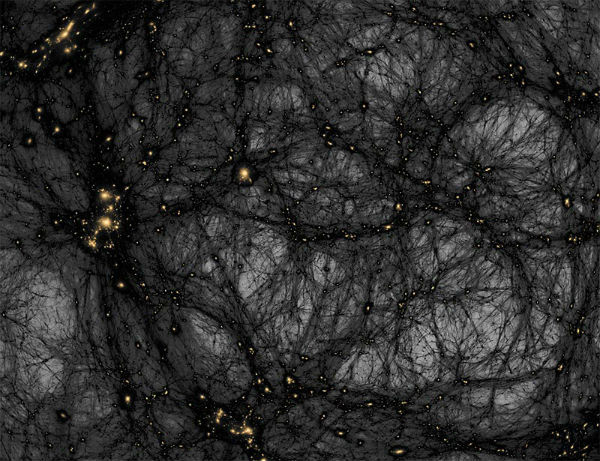

Главная Опрос Темная энергия Интенференция волн
Исследователи международной группы по изучению темной энергии (DES) опубликовали самую подробную на сегодняшний день карту распределения темной материи в нашей Вселенной.
В ходе крупнейшего в истории проекта подобного рода группа ученых исследовала более 26 миллионов галактик.
Составленная ими карта поможет ученым понять, из чего состоит темная материя, и больше узнать о загадочном феномене под названием "темная энергия".
Как утверждает профессор Университетского колледжа Лондона Офер Лахав, занимающий должность председателя консультативного совета DES, карта поможет лучше понять общие принципы функционирования Вселенной. "Темная энергия и темная материя представляют собой, возможно, одну из главных научных загадок. Это открытие вызвало большой интерес во всем научном мире, потому что оно может перевернуть наши представления о Вселенной. И на самом деле мы до сих пор не знаем, что это такое", - говорит ученый.
Анализ движения звезд и галактик заставляет предположить, что во Вселенной присутствуют невидимые частицы, названные учеными темной материей.
Астрономы увидели, как черная дыра поглощает звезду
В 1998 году две группы астрономов обнаружили, что расширение Вселенной происходит с постоянным ускорением (постоянная Хаббла), вместо того, чтобы замедляться, как следовало из принятой в то время теории. Физики предположили, что это ускорение вызвано неким феноменом, который они и назвали темной энергией. Проведенные с тех пор исследования свидетельствуют, что темная энергия и темная материя составляют 96% Вселенной.
Вселенная изучается с помощью телескопа "Виктор Бланко" в обсерватории Черро Толедо в чилийских Андах. Новости науки BBC
"Мы не можем просто заявить, что не знаем природы этого явления. Мы должны постараться понять, что это такое", - говорит профессор Лахав.
Исследование темной энергии, проводимое DES, - это самый крупный на сегодняшний день проект подобного рода.
Он начался в 2004 году, сейчас в нем принимают участие 400 ученых, представляющих 26 различных научных институтов из семи стран.
Исследователи получили изображения 26 миллионов галактик с помощью самой чувствительной на сегодня астрономической цифровой фотокамеры с разрешением в 570 мегапикселей, установленной на телескопе "Виктор Бланко" в обсерватории Черро Толедо в чилийских Андах.
Такая камера способна зафиксировать свет далеких галактик, расположенных на расстоянии восьми миллиардов световых лет.
Отчет для нового Эйнштейна
Исследуя гравитационные искажения этого света, вызванные темной материей, исследователи смогли рассчитать ее распределение.
Воздействие темной энергии можно подсчитать, изучая, как распределение темной материи меняется со временем.
Ученые также смогли вывести общее количество темной энергии и темной материи, изучив плотность и расположение галактик.
Полученные результаты подтверждают проведенные ранее исследования, в ходе которых было подсчитано, что Вселенная лишь на 4% состоит из обычной материи, на 26% - из темной материи и на 70% - из темной энергии.
Исследователи надеются, что внимательное изучение карты позволит лучше понять природу темной материи и темной энергии и таким образом внести вклад в общую теорию физики.
Вселенная, по мнению ученых, на четверть состоит из темной материи
Данные, опубликованные исследователями, представляют собой результаты одного года наблюдений.
Исследователи планируют собирать данные еще четыре года на еще большей площади небосвода. Профессор Лахав говорит, что впереди еще много работы.
"Когда мы завершим исследование, изучив 300 миллионов галактик и тысячу сверхновых, мы сможем составить итоговый отчет для нового Эйнштейна, который когда-нибудь объяснит нам, что все это значит и почему Вселенная именно такая", - говорит ученый.
Расширение Вселенной не может быть объяснено только воздействием гравитации
Галактики давно разлетелись бы на огромные расстояния друг от друга - что-то удерживает их вместе
Астрофизики постулируют наличие невидимой темной энергии, которая воздействует на объекты в галактических масштабах
Расширение Вселенной постоянно ускоряется. Это указывает на наличие темной энергии, которая стоит за этим расширением
По современном представлениям, 70% Вселенной состоит из темной энергии, 26% - темной материи, и только 4% - из материи, привычной для нас
| Планета | Масса (в массах Земли) | Звёздный период обращения, годы | Синодический период обращения, сутки | Среднее расстояние от Солнца: а.е., млн.км, световой год | Наклонение орбиты к эклиптике | ||
|---|---|---|---|---|---|---|---|
| Меркурий | 0,06 | 0,241 | 116 | 0,387 | 58 | 0,000006121092464037 | 7°00' |
| Венера | 0,82 | 0,615 | 584 | 0,723 | 108 | 0,00001143674849564 | 3°24' |
| Земля, Марс | 1,00 | 1,00 | - | 1,000 | 150 | 0,000015812727297704 | - |
| 0,11 | 1,881 | 780 | 1,524 | 228 | 0,00002409326855475 | 1°51' | |